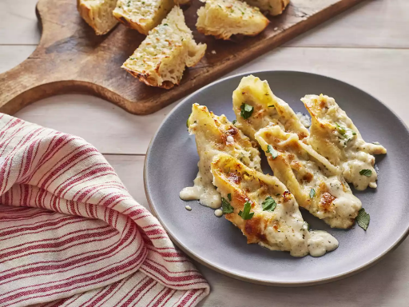

Chicken Alfredo Shells straight out of the oven
Ingredients
30 jumbo pasta shells
1 pound skinless, boneless chicken breast halves
1 and 1/2 teaspoons kosher salt, divided
1 and 1/4 teaspoons ground black pepper, divided
1 tablespoon olive oil
3/4 cup ricotta cheese
2 cups shredded Italian cheese blend, divided
2 tablespoons chopped fresh flat-leaf parsley, plus more for garnish
2 tablespoons heavy whipping cream
2 cups heavy whipping cream
1/2 cup unsalted butter
2 cloves garlic, finely chopped
1 teaspoon Italian seasoning
2 and 1/2 cups freshly grated Parmesan cheese, divided
Making
Preheat the oven to 375 degrees F (190 degrees C).
Bring a large pot of salted water to a boil over medium-high heat; cook the pasta shells according to package directions for al dente, 9 to 11 minutes. Drain and run under cold water until cool enough to touch. Set aside.
Season chicken breasts on both sides with 1/2 teaspoon salt and 1/2 teaspoon pepper. Heat oil in a large skillet over medium heat. Add chicken; cook until browned and a thermometer inserted into the thickest portion of the chicken breast registers 165 degrees F (74 degrees C), about 18 minutes, turning halfway through. Remove from heat and transfer chicken from skillet to a cutting board. Shred chicken using 2 forks and set aside.
Stir together ricotta, 1 1/2 cup Italian blend cheese, parsley, 1/2 teaspoon salt, 1/4 teaspoon pepper, chicken, and 2 tablespoons cream in a medium bowl. Set aside.
Combine 2 cups cream and butter in a deep, large skillet. Bring to a simmer over medium heat and cook for 2 minutes, stirring occasionally. Whisk in garlic, Italian seasoning, and remaining 1/2 teaspoon salt and 1/2 teaspoon pepper and cook for 1 more minute. Add 2 cups Parmesan cheese and whisk until melted. Set sauce aside.
Add 1 cup sauce to the bottom of a 9x13-inch baking dish. Using a spoon, fill each of the jumbo shells generously with the chicken-ricotta mixture. Lay them seam side up in the baking dish, then pour the remaining sauce all over the top. Sprinkle with remaining 1/2 cup Italian blend cheese and 1/2 cup Parmesan cheese.
Bake in the preheated oven until bubbly and golden, 20 to 25 minutes. Garnish with more parsley if desired and serve.